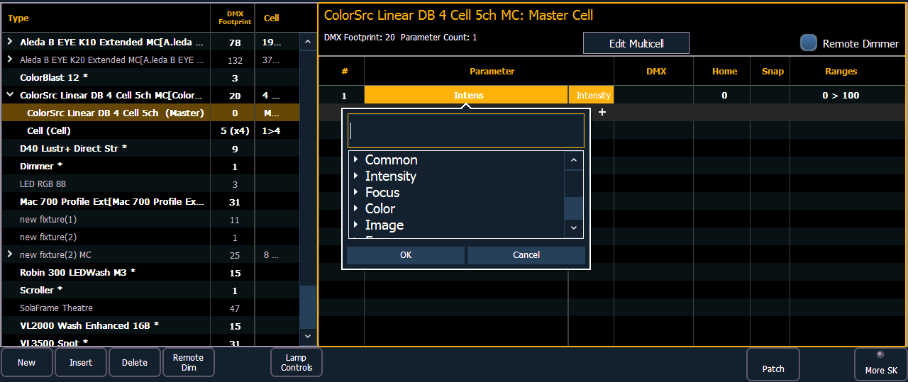
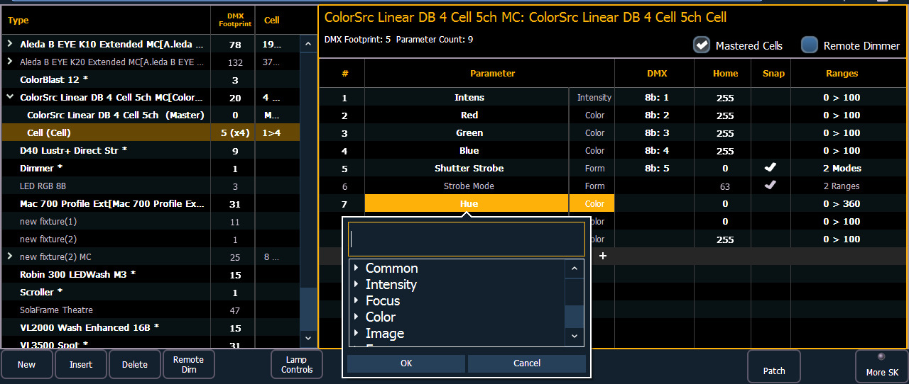
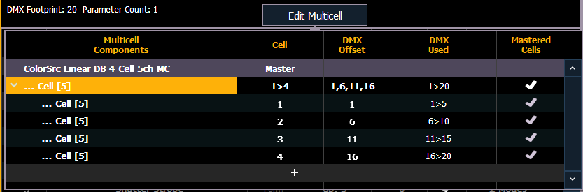

You will need to select the master or cell profile to edit parameters. In this view, you'll be able to edit parameters, DMX, Home, Snap, and ranges/modes. See Creating a New Fixture and Range editing a parameter for more information.


To change specific cell data such as DMX offset, you will need to use {Edit Multicell}. With a multicell fixture or a master cell selected in the fixture editor, press {Edit Multicell}. In the Edit Multicell window, you can edit cell numbers, DMX offset, and mastered cells for each cell.

Once you are finished editing, press {Save Fixture} to save your changes or {Cancel Edit} to remove the changes and exit the edit mode.